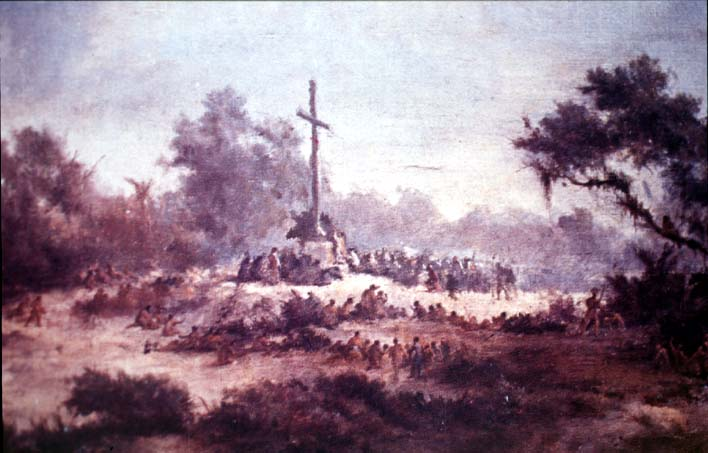

|
|  |
|
Vitor Meirelles, Primeira Missa no Brasil
|
The final decades of the nineteenth century, however, were also a period of historiographical reassessment of the colonial past. Historians such as João Capistrano de Abreu, author of the influential Chapters of Brazilian Colonial History (1906), written under the influence of German historicism and human geography (Leopold von Ranke, Friedrich Ratzel), investigated the structural continuities handed down from colonial society, challenging the mythical notions of an interracial encounter that had underpinned previous historiographies as well as the romantic image of the colonial past championed by literary and artistic indianism. It is interesting to observe the modifications of Vitor Meirelles´s First Holy Mass in Brazil –one of the canonical works of nineteenth-century Brazilian art– in the light of this shift towards a more rigorous and methodical interest in the nation-state´s colonial origins, rather than as merely circumstancial. This first sketch, from the mid-1850s, still foregrounds the importance of the environment in which the colonial encounter takes place, leaving the actors (the priests and Portuguese soldiers performing the Christian rite and the natives who surround and watch them) almost indistinguished, as if blended into one single group through the impact of tropical nature.
|